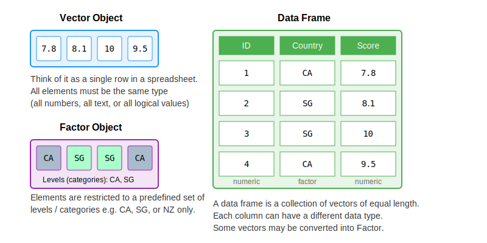

Introduction to R and RStudio
Welcome!
Preamble
About Bella:
Senior Librarian, Research & Data Services team, SMU Libraries.
Bachelor in Info Tech (IT), MSc in Info Studies from NTU.
Have been with SMU since the pandemic era (2021).
Have been doing this workshop since Aug 2023.
About Wei:
Principle Librarian, Instruction and Learning Services, SMU Libraries.
Have been with SMU over 16 years. This is my first R workshop!
About this workshop:
Live-coding format; code along with me!
Goal of workshop: to give you enough fundamentals (at least to the point that ChatGPT can’t bluff you so easily) and confidence to explore R on your own.
Don’t be afraid to ask for help! We are all here to learn.
The outline for these workshops
The workshops are structured to follow this workflow when dealing with data 
The outline for Introductory R for Social Science series
- Import data into R, which means take data (stored in a file, via API, etc) and load it into a dataframe in R
- Tidy the imported data.
- Tidy = storing it in a consistent form that matches the semantics of the dataset.
- Tidy data = each column is a variable, each row is an observation
- Once a data is tidy, we can transform it. Transformation includes:
- narrowing in on observations of interest (like all people in one city or all data from the last year)
- creating new variables that are functions of existing variables (like computing speed from distance and time)
- calculating a set of summary statistics (like counts or means).
- Once we have tidy data with the info we need, we can visualize it and model it.
- Communicate the result. It doesn’t matter how well your models and visualization have led you to understand the data unless you can also communicate your results to others.
Today’s plan
- R and Rstudio
- Before coding
- R Objects and Values
- Data types
- Functions and packages
- Data structures
- Exploring datasets
- Trouble shooting tips
- Recap & feedback
What is R? What is R Studio?
R: R is an open-source programming language that was developed for statistical analysis and visualization. Community share R codes and create shortcuts.
RStudio: The R software environment i.e. RStudio is where we use to interact more easily with R language and scripts.
You will need to install both for this workshop. Go to https://posit.co/download/rstudio-desktop to download and install both if you have not done so. Remember: Install R firstly and then RStudio.
Check out the course website for a step-by-step guide.
A Tour of RStudio
Firstly, we need to be comfortable with the RStudio interface. We will use the RStudio to write code, navigate the files on our computer, inspect the variables we create, and visualize the plots we generate.

R Studio layout
Before Coding
- Setting up working directory
- Creating projects
- Creating folders and files
Setting Up Working Directory
Working directory -> where R will look for files (scripts, data, etc). Stay organized with all files and folders related to a project stored in one place.
By default, it will be on your Desktop.
Best practice is to use R Project to organize your files and data into projects.
When using R Project, the working directory = project folder.
Creating the project for this workshop
Go to
File>New project. ChooseNew directory, thenNew projectEnter
intro-r-socscias the name for this new folder (or “directory”) and choose where you want to put this folder, e.g.DesktoporDocumentsif you are on Windows. This will be your working directory for the rest of the workshop!
Creating folders inside our working directory
data- we will save our raw data here. It’s best practice to keep the data here untouched.data-output- if we need to modify raw data, store the modified version here.fig-output- we will save all the graphics we created here!
Notes
Don’t:
Don’t put your R projects inside your OneDrive folder as that may cause issues sometimes.
Folder/file names should avoid spaces, symbols, and special characters. Prefer folder/file names that are all in lower case.
Do:
- If for some reason your working directory is not what it should be change the working directory in the RStudio interface by navigating in the file browser to where your working directory should be, clicking on the blue gear icon “More”, and selecting “Set As Working Directory”.
Let’s Code!
Create a new R script - File > New File > R script.
RStudio allows you to execute commands directly from the script editor by using the Ctrl + Enter shortcut (on Mac, Cmd + Return will work).
You can type commands directly into the console and press Enter to execute those commands, but they will be forgotten when you close the session. It is better to type the commands in the script editor and save the script. This way, there is a complete record and can easily replicate the results.
Note: RStudio does not autosave your progress, so remember to save from time to time!
R Objects and Values
In this line of code:
"Singapore"is a value. This can be either a character, numeric, or boolean data type. (more on this soon)country_nameis the object where we store this value. This is so that we can keep this value to be used later.<-is the assignment operator to assign the value to the object.- You can also use
=, but generally in R,<-is the convention. - Keyboard shortcut:
Alt+-in Windows (Option+-in Mac)
- You can also use
R Objects and Values
In this line of code:
"Singapore"is a value. This can be either a character, numeric, or boolean data type. (more on this soon)country_nameis the object where we store this value. This is so that we can keep this value to be used later.<-is the assignment operator to assign the value to the object.- You can also use
=, but generally in R,<-is the convention. - Keyboard shortcut:
Alt+-in Windows (Option+-in Mac)
- You can also use
Object name rules:
Can’t start with numbers
Case sensitive
No spaces
Some reserved words (like some function names in R)
Refresher: Quantitative Data Types
Non-Continuous Data
Nominal/Categorical: Non-ordered, non-numerical data, used to represent qualitative attribute.
- Example: nationality, neighborhood, employment status
Ordinal: Ordered non-numerical data.
- Example: Nutri-grade ratings, frequency of exercise (daily, weekly, bi-weekly)
Discrete: Numerical data that can only take specific value (usually integers)
- Example: Shoe size, clothing size
Binary: Nominal data with only two possible outcome
- Example: pass/fail, yes/no, survive/not survive
Continuous Data
Interval: Numerical data that can take any value within a range. It does not have a “true zero”.
- Example: Celsius scale. Temperature of 0 C does not represent absence of heat.
Ratio: Numerical data that can take any value within a range. it has a “true zero”.
- Example: Annual income. annual income of 0 represents no income.
Data Types in R
The four basic data types are characters, numeric, boolean, and integer. Let’s look at examples using our WVS survey variables:
To include comments in the code, use the # character.
Anything to the right of the # sign and up to the end of the line is treated as a comment and is ignored by R when executing.
Good practice to make notes and explain the codes.
Checking data type of a variable
You can use str or typeof to check the data type of an R object.
str returns both data type and value.
Arithmetic operations in R
You can do arithmetic operations in R. For example, let’s calculate average satisfaction scores:
Boolean operations in R - Simple TRUE/FALSE statements
Boolean operations in R are useful for filtering survey data. Before that, let’s look at how R evaluates simple TRUE/FALSE statements
Is life_satisfaction greater than 8?
[1] TRUEIs the country Singapore?
Is the country NOT Singapore?
Boolean operations in R - AND operator
Sometimes, we may have multiple statements to evaluate. This is where the Boolean Operators will come handy.
AND operations (both conditions must be TRUE). In R, it is represented by ampersand &
Is the country New Zealand AND is the life satisfaction more than 8?
country_code == "NZL" is FALSE while life_satisfaction > 8 is TRUE
The whole statement will return FALSE because not all conditions TRUE.
Boolean operations in R - OR operator
OR operations (at least one condition must be TRUE). In R, it is represented by pipe symbol |
Is the country New Zealand OR is the life satisfaction more than 8?
As long as one condition is met, this will be TRUE.
Functions in R
A function is like a recipe in cooking.
It takes some ingredients (inputs) and uses a set of instructions to produce a result (output).
In R, a function is a pre-written set of recipes/instructions that performs a specific task. Function name will always be followed by round brackets
()
Example: round() function in R will round up numbers.
round()is the “recipe”, while3.1415926is the “ingredients”
Saving the result to an object:
Functions with Arguments in R
Following the recipe analogy, arguments are the ingredients you provide to a function. function_name(arguments/parameters)
Some arguments are required, while others are optional (they have default values).
Each argument tells the function what to use or how to perform the task.
Example: Think of a bubble tea order as a function. The possible arguments/ingredients here are:
Tea - required ingredient
Milk - optional, the default is to include
Toppings - optional, the default choice is “pearls”
In R:
3.1415926is the required argument (if this is not provided, the function will not run)digitsis an optional argument specifying how many decimal places to round to (the default is 0)
How do I find out more about a particular function?
You can call the help page / vignette in R by prepending ? to the function name.
E.g. if you want to find out more about the round function, you can run ?round in your R console (bottom left panel)
Packages in R
Packages are a collections of R functions, datasets, etc. Packages extend the functionality of R.
- (Closest analogy I can think of is that they’re equivalent of browser add-ons, in a way)
Popular packages:
tidyverse,caret,shiny, etc.Installation (you only need to do this once):
install.packages("package name")Loading packages (you need to run this everytime you restart RStudio):
library(package name)- let’s try to loadtidyverse!- Tidyverse is a well-known collection of packages that facilitates data science projects. It includes packages for data manipulation, visualization, importing, and tidying.
Data Structures in R
We will start with exploring 3 basic types of data structures in R:
Vector - can hold multiple values in a single variable/object.
Factor - Special data structure in R to handle categorical variables.
Data frame - De facto data structure for tabular data in R, and what we use for data processing, plotting, and statistics.

Data Structures in R: Vectors
Think of vectors as a column in a dataset. It is the most common and basic data structure in R. (pretty much the workhorse of R!)
A vector can only contain 1 data type.
Vector can be created with c() function.
Can add, remove, or change values in a vector.
Inspect vectors: typeof(), str(), length()
Vector Manipulations: Retrieve and update items
Retrieve the first country in the vector
Retrieves the first three satisfaction scores
Retrieves the first and the third satisfaction scores
Update the first satisfaction score
Why square brackets and not round brackets?
Round brackets () are for running functions, like using a tool: mean() or sum().
Square brackets [] are for accessing specific parts of your data, where we pass the index number(s) of the element(s) we want.
Vector Manipulations: Retrieve items based on criteria
Let’s find high satisfaction scores (above 7)!
The code below will create a boolean vector called
criteriathat basically keep tracks on whether each items insidesatisfaction_scoresfulfil our condition.The condition is “value must be > 7”. e.g. if item 1 fulfils our condition, then item 1 is ‘marked’ as
TRUE. Otherwise, it will beFALSE
[1] FALSE FALSE TRUE FALSE TRUE- This line of code applies the boolean vector
criteriatosatisfaction_scores, and only retrieve items that fulfils the condition. i.e. only return TRUE valuecriteriavector
Vector Manipulations: Add items
Several ways to add items to a vector
1satisfaction_scores <- c(satisfaction_scores, 7)
2satisfaction_scores <- c(satisfaction_scores, 8, 9, 10)
3satisfaction_scores <- c(8, satisfaction_scores)
4satisfaction_scores <- append(satisfaction_scores, 9, after = 2)- 1
- Add a single score to the end of the vector using c()
- 2
- Add multiple scores to the end
- 3
- Add a score to the beginning
- 4
- Insert a score at a specific position using append(vector_name, elements_to_be_added, from_the_position)
Vector Manipulations: Remove items
1satisfaction_scores <- satisfaction_scores[-c(2, 4)]
2satisfaction_scores <- satisfaction_scores[satisfaction_scores <= 7]
3satisfaction_scores <- na.omit(satisfaction_scores)- 1
- Remove elements by index using “negative indexing”
- 2
- Remove elements based on a condition using logical indexing. Remove these items which are FALSE.
- 3
- Remove NA values from the vector
Vector Manipulations: Handle NA values
NA values indicate null values, or the absence of a value (0 is still a value!)
Summary functions like
meanneeds you to inlcude argument calledna.rmon how you want it to be handled.
Survey data often contains missing values (NA):
Data Structures in R: Factors
Special data structure in R to deal with categorical data.
Look (and often behave) like character vectors but are actually treated as integer vectors.
Can only contain a predefined set of values, known as levels. R always sorts levels in alphabetical order
Can be ordered (ordinal) or unordered (nominal).
May look like a normal vector at first glance, so use
str()to check.
Unordered (Nominal):
employment_factor <- factor(c("Full time", "Part time", "Student", "Retired", "Student"))
str(employment_factor) Factor w/ 4 levels "Full time","Part time",..: 1 2 4 3 4Ordered (Ordinal):
Data Structures in R: Dataframe
De facto data structure for tabular data in R, and what we use for data processing, plotting, and statistics.
Similar to spreadsheets - a rectangular collection of variables (columns) and observations (rows)!
You can create it by hand like so:
survey_data <- data.frame(
country = c("SGP", "CAN", "NZL", "SGP", "CAN"),
life_satisfaction = c(8, 7, 9, 6, 8),
employment = c("Full time", "Student", "Part time", "Retired", "Full time")
)
print(survey_data) country life_satisfaction employment
1 SGP 8 Full time
2 CAN 7 Student
3 NZL 9 Part time
4 SGP 6 Retired
5 CAN 8 Full timeData Structures in R: Others
Lists: A type of recursive vector
Matrices: A collection of elements of the same type in rows and columns
Downloading the World Values Survey (WVS) Dataset
For this workshop, we will try loading a dataset from a file.
Go to the course website and go to the ‘Dataset’ tab to download the data file and information about this WVS data
Download this CSV and save it under your data folder in your R project!
Loading the WVS Dataset
Let’s load our actual World Values Survey dataset using read_csv function.
Before use read_csv install and load package tidyverse. Install the package only once and need to load the package in every session before you use it.
Make sure to save the CSV file in your data folder! (No auto save)
Exploring the WVS Dataset
Basic dataframe manipulations: Retrieving values
Some basic dataframe functions before we move on to data wrangling next week:
Trouble Shooting
Types of messages
Error: Fatal error in your code that prevented it from being run through successfully. Need to fix it for the code to run.
Warning: Non-fatal errors (don’t stop the code from running, but this is a potential problem that you should know about).
Message: Helpful information about the code you just ran(can usually ignore these messages)
Trouble Shooting
Check. Did you…
Set your working directory?
Check for missing commas (,), parentheses ()?
Check your spelling?
Spelling : Punctuation <- meaan(c(1, 2, 3, 4)) or print(Punctuatioon)
Punctuation : sum(10?20) or Punctuation <- sum(c(10, 20)))
Capitalization : sUm(c(5, 10, 15))
In text indicators : X + Y or #taking notes or “name” vs name
Recap
R & RStudio: R is a programming language for statistical computing and graphics, while RStudio is an environment that makes it easier to write, run, and manage R code.
Working Directory: A folder on your computer where R reads and saves files.
Data Type: Types of value an object can hold, such as numeric, character, and Boolean.
Data Structure: Data structures organize and store data in R, such as vectors, factors, and data frames.
Functions: Reusable codes that perform specific tasks. Can call functions with arguments.
Packages: Collections of functions and data to perform tasks. Need to install and load packages.
End of Session 1!
Next Session: Data wrangling with dplyr and tidyr packages - we’ll learn how to:
Filter survey responses by country
Calculate average satisfaction scores by demographic groups
Create new variables from existing ones
Handle missing values in survey data
And much more!